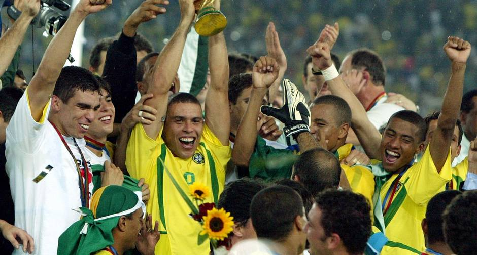

Brasil
O maior campeão da Copa do Mundo, o Brasil, tem uma rica história no futebol. Com cinco títulos mundiais, a seleção brasileira é conhecida por seu estilo de jogo ofensivo e talentoso. Jogadores como Pelé, Zico, Romário e Ronaldo são ícones do futebol brasileiro e mundial. O Brasil é sempre um dos favoritos em cada edição da Copa do Mundo, buscando conquistar seu sexto título e continuar sua tradição de sucesso no cenário internacional.
Maiores artilheiros da seleção
- Neymar: 79 gols
- Pelé: 77 gols
- Ronaldo: 62 gols
Alemanha e Itália
A Alemanha e a Itália são duas das seleções mais vencedoras da história da Copa do Mundo, apenas atrás do Brasil. A Alemanha tem quatro títulos, enquanto a Itália também tem quatro. Ambas são conhecidas por seu estilo de jogo sólido e técnica.
Maiores 2 artilheiros de cada seleção
- Miroslav Klose (alemão): 53 gols
- Thomas Müller (alemão): 40 gols
- Roberto Baggio (italiano): 35 gols
- Francesco Totti (italiano): 31 gols
Ultima copa do Brasil campeão (2002)
